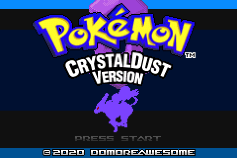
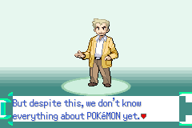
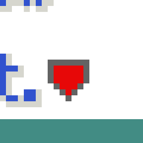
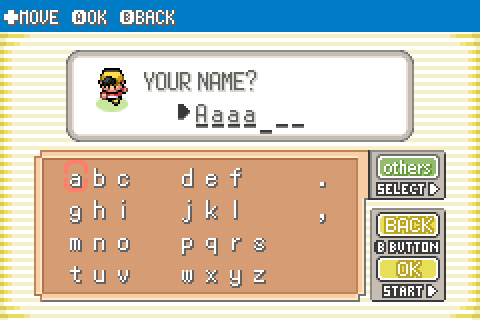
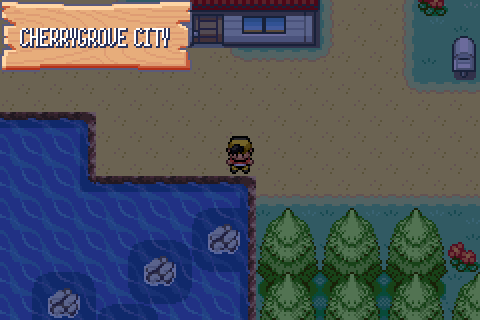
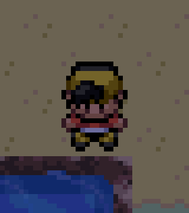
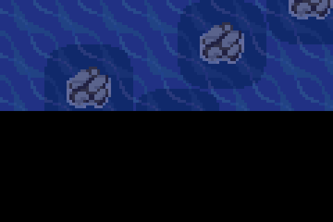
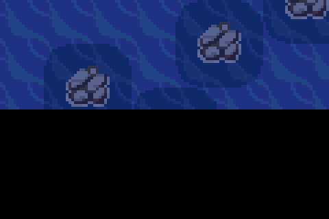

All six lines from observations.txt, each with the cause, the change and a capture from
the playtest harness against the rebuilt ROM. Captures are raw mGBA frames, nearest-neighbour upscaled.
Cause. src/title_screen.c had been taken whole from expansion, so the ROM still built
Emerald's Rayquaza title even though CrystalDust's title art was sitting in graphics/title_screen/.
pokemon_logo.gbapal was expansion's too, despite pokemon_logo.png being CrystalDust's.
Change. Ported CrystalDust's 619-line title screen onto this tree's asset pipeline
(INCBIN_U32(".4bpp.lz") → INCGFX_U32(".png", ".4bpp.smol"),
LZ77UnCompVram → DecompressDataWithHeaderVram, GBS song start per D32).
Restored the four CrystalDust palettes and rebuilt gTitleScreenBgPalettes in src/graphics.c
from logo + emblem + press-start — 448 + 32 + 32 = 512 bytes, exactly the 0x200 the loader asks for.
Fixed.

Cause. graphics/fonts/down_arrow.png was CrystalDust's 128×16 sheet, but
src/text.c is byte-identical to expansion's and reads it as an 8×48 strip, blitting
8×16 rects at the y-offsets sDownArrowYCoords[] = { 0, 1, 2, 1 }. CrystalDust's own
gflib/text.c indexes the same art by x ({ 0x0, 0x10, 0x20, 0x10 }).
Code from one upstream, art from the other.
Change. Restored expansion's 8×48 down_arrow.png.
Evidence. The arrow is drawn at the print cursor, not in the window corner. Sampling the frame every
4 frames while a full page waits for input shows a 7×9 region at (176,140) appearing, bobbing one pixel
and clearing, on the 8-frame cadence TextPrinterDrawDownArrow sets. Zoom below is 12×.
Fixed.


Cause. Two faults stacked. src/field_region_map.c was expansion's Hoenn wall map rather
than CrystalDust's; and the four graphics/region_map/mapsec_layout_*.bin files still held
CrystalDust's raw mapsec numbering, which is Johto-first (MAPSEC_NEW_BARK_TOWN = 0x00). Our
region_map_sections.h is auto-generated and Hoenn-first, so Johto ids 0..n read out as Hoenn towns.
Change. Rewrote field_region_map.c as a port of CrystalDust's onto the CDMap_*
API (D33), and remapped all four layout bins by matching #define MAPSEC_* names. 96 of the 98 ids in
use matched exactly; the two that did not, ROUTE_3_FLYDUP and ROUTE_10_FLYDUP, were
folded onto ROUTE_3 and ROUTE_10.
Evidence. Decoding mapsec_layout_johto_primary.bin against our own header, before and
after — first cell at which each new section appears:
| cell (x,y) | before | after |
|---|---|---|
| 14,1 | FIERY_PATH | LAKE_OF_RAGE |
| 14,2 | ROUTE_115 | ROUTE_43 |
| 4,3 | ROUTE_111 | ROUTE_39 |
| 5,3 | ROUTE_110 | ROUTE_38 |
| 9,3 | SLATEPORT_CITY | ECRUTEAK_CITY |
| 10,3 | ROUTE_114 | ROUTE_42 |
| 14,3 | FALLARBOR_TOWN | MAHOGANY_TOWN |
| 15,3 | ROUTE_116 | ROUTE_44 |
| 19,3 | LILYCOVE_CITY | BLACKTHORN_CITY |
| 9,4 | ROUTE_109 | ROUTE_37 |
| 19,4 | ROUTE_117 | ROUTE_45 |
| 7,5 | ROUTE_108 | ROUTE_36 |
| 11,5 | PETALBURG_CITY | VIOLET_CITY |
| 12,5 | ROUTE_103 | ROUTE_31 |
Fixed. Verified in-game earlier in the round: the map draws Johto, the JOHTO region label, the secondary-layer dots, the player icon and the ✚MOVE help bar, and names the tile under the cursor CHERRYGROVE CITY where it previously said OLDALE TOWN.
Cause. src/naming_screen.c is expansion's. Its
NamingScreen_CreatePlayerIcon calls GetRivalAvatarGraphicsIdByStateIdAndGender —
the rival's avatar, which in this tree is still Emerald's Brendan/May. CrystalDust calls
GetPlayerAvatarGraphicsIdByStateIdAndGender. The rival naming screen was worse still: expansion
builds a bespoke sprite sheet from graphics/naming_screen/rival.png over
OBJ_EVENT_GFX_RED_NORMAL.
Change. Player icon now asks for the player's avatar; rival icon now draws
OBJ_EVENT_GFX_RIVAL (Silver) as a plain object-event sprite, as CrystalDust does. Removed the
now-dead sRival_Gfx/sRival_Pal/sAnims_Rival.
Fixed. Gold now stands in the name-entry box.

Cause. RHH expansion ships OW_OBJECT_VANILLA_SHADOWS FALSE, which gives every object
event a second sprite for a shadow. That shadow is drawn with ST_OAM_OBJ_BLEND, and in this tree
the day/night code owns BLDCNT, so the blend never applies and the shadow renders as a solid
white blob. CrystalDust draws no shadow under a standing object at all.
Change. include/config/overworld.h: OW_OBJECT_VANILLA_SHADOWS TRUE, so a
shadow is drawn only while an object is mid-jump. This also hands back one OAM slot per object.
Fixed. Zoom is 4× on the player, standing.


Cause. Same class again, inside one function.
src/tileset_anims.c had CrystalDust's TilesetAnim_General driver and CrystalDust's
art — 16×184 frames, 46 tiles — but expansion's QueueAnimTiles_General_Water:
- AppendTilesetAnimToBuffer(gTilesetAnims_General_Water[i], (u16 *)(BG_VRAM + TILE_OFFSET_4BPP(432)), 30 * TILE_SIZE_4BPP); + AppendTilesetAnimToBuffer(gTilesetAnims_General_Water[i], (u16 *)(BG_VRAM + TILE_OFFSET_4BPP(416)), 0x600);
It wrote 30 tiles starting at tile 432. CrystalDust's water occupies tiles 416–461, so the copy missed
the water entirely and landed on its neighbours; the water itself never changed. The neighbouring
WaterFast (464), Whirlpool (488) and Flower (508) queues had survived
the merge with CrystalDust's offsets intact, which is why only the still water looked frozen.
Evidence. Two captures 8 frames apart at the Cherrygrove shoreline. 36,400 pixels differ between them; before the change the same pair was pixel-identical across 32 frames.
Fixed.


gTitleScreenEmeraldVersionGfx,
gTitleScreenEmeraldVersionPal and gTitleScreenCloudsTilemap are unreferenced.
gTitleScreenAlphaBlend[64] was kept, because src/intro.c still uses it.src/intro.c is still expansion's Emerald intro; CrystalDust's has not been ported.graphics/naming_screen/rival.png and rival.pal are now unreferenced.graphics/pokedex and graphics/pokemon_storage still have not been checked for
the same art-vs-code mismatch (carried over from D106).